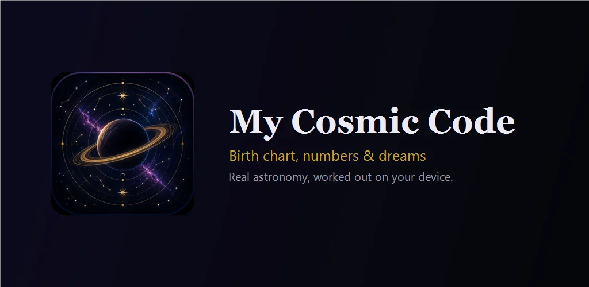
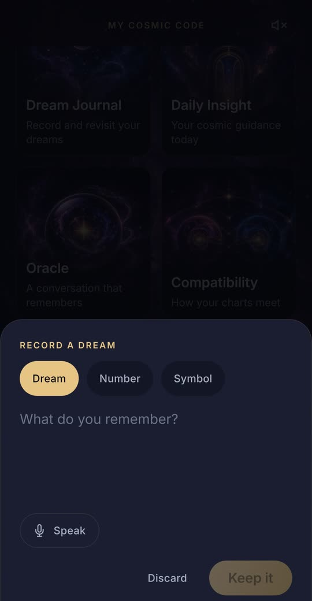

My Cosmic Code : Horoscope
Horoscope du jour, thème astral, compatibilité et dictionnaire des rêves.
Disponible sur Google PlayEssaie ici, dans ton navigateur
 Thème natalTon plan cosmique
Thème natalTon plan cosmique Calendrier lunaireCycles et phases de la Lune
Calendrier lunaireCycles et phases de la Lune NumérologieDécode le pouvoir des nombres
NumérologieDécode le pouvoir des nombres CompatibilitéLa rencontre de vos thèmes
CompatibilitéLa rencontre de vos thèmes HoroscopesChinois, japonais et védique
HoroscopesChinois, japonais et védique Ciel nocturneLe vrai ciel, relié à ton thème
Ciel nocturneLe vrai ciel, relié à ton thème Mon signeTon signe solaire et lunaire
Mon signeTon signe solaire et lunaire Planètes aujourd’huiLune, planètes et rétrogrades maintenant
Planètes aujourd’huiLune, planètes et rétrogrades maintenant Carte du jourInterroge le Visionnaire voilé
Carte du jourInterroge le Visionnaire voilé Clé des songesTous les symboles, de A à Z
Clé des songesTous les symboles, de A à Z



My Cosmic Code est une app d'astrologie calme et privée pour chaque signe astrologique : un horoscope du jour personnel tiré de ton propre thème astral, un thème natal complet calculé avec l'astronomie réelle, la compatibilité amoureuse et amicale, la numérologie, une carte du ciel et un journal de rêves avec sa clé des songes. Tout est calculé sur ton téléphone, et tes données y restent.
Désormais entièrement en français.
CIEL NOCTURNE : LE VRAI CIEL
- Une carte du ciel en temps réel, au-dessus de toi ou de toute ville, à toute heure : étoiles, 88 constellations, la Lune et les planètes visibles ce soir.
- Viser le ciel : lève ton téléphone, la carte le suit et montre les étoiles et constellations qui s'y trouvent, sans caméra.
- Cette nuit saute au ciel noir. Ciel profond ajoute galaxies, nébuleuses et amas d'étoiles.
- Le ciel de ma naissance : le vrai ciel de ton lieu et de ton instant de naissance.
- Mon ciel cosmique : tes planètes natales parmi les étoiles et celles du jour qui passent près d'elles — où sont les planètes maintenant dans ton thème.
QUATRE HOROSCOPES
- Occidental (ton thème astral), védique (signe lunaire, nakshatra, lagna, dasha), chinois (animal et élément selon le vrai Nouvel An chinois) et japonais (eto et Ki des neuf étoiles).
TON HOROSCOPE DU JOUR, TIRÉ DE TON PROPRE CIEL
- Aujourd'hui : ton jour personnel, le signe de la Lune en ce moment et le prochain transit sur ton thème.
- La saison à venir : les prochains transits sur tes planètes.
- Notifications de transits les jours clés pour ton thème : transits forts, stations, nouvelles et pleines lunes ; trois par semaine au plus.
- Phases de la lune, calendrier lunaire et signe de la Lune jour après jour.
UN VRAI THÈME ASTRAL, PAS SEULEMENT UN SIGNE DU ZODIAQUE
- Ton signe solaire, lunaire et ton ascendant selon ta date, heure et lieu de naissance : les trois signes que l'astrologie lit ensemble.
- Une roue du thème natal complète : planètes, maisons, aspects, ascendant, milieu du ciel, rétrogrades signalées.
- Une vue du système solaire et le ciel jour après jour.
- Un Rapport cosmique avec des textes pour les 144 combinaisons signe solaire et ascendant.
LES 12 SIGNES DU ZODIAQUE
- Bélier, Taureau, Gémeaux, Cancer, Lion, Vierge, Balance, Scorpion, Sagittaire, Capricorne, Verseau et Poissons, chacun avec élément, planète maîtresse, pierre de naissance et couleur.
COMPATIBILITÉ AMOUREUSE ET PLUS
- Compare deux thèmes astraux : amour, intimité, amitié, travail et bien-être.
- Synastrie, thème composite et superposition des maisons.
- Pas de score ni de pourcentage : tu vois comment deux thèmes se rencontrent vraiment.
NUMÉROLOGIE AVEC LE CALCUL VISIBLE
- Chemin de vie, année personnelle et jour personnel, avec le calcul détaillé.
UN JOURNAL DE RÊVES PRIVÉ, AVEC SA CLÉ DES SONGES
- Note tes rêves, les nombres et symboles qui reviennent, ou dicte-les.
- Touche Analyser sur un rêve et la clé des songes, dictionnaire des rêves, montre comment la tradition lit ses symboles — un serpent, les dents, l'eau, une maison — jusqu'à cinq par rêve.
- Elle décrit, elle ne prédit jamais : ce qu'un symbole signifie traditionnellement, pas ce qui va arriver. Le dernier mot sur ton rêve reste le tien.
- L'analyse montre aussi quels symboles reviennent. La clé des songes fonctionne hors ligne.
PRIVÉE PAR CONCEPTION
Dans l'app : pas de pub, pas d'analytique, pas de traceurs, pas de compte. Tes données de naissance, ton thème et ton journal restent sur ton appareil ; tu peux les exporter ou les supprimer dans l'app. La dictée vocale se fait sur ton téléphone ; pour une langue qu'il ne transcrit pas hors ligne, l'app demande d'abord avant d'envoyer ta voix au service vocal de Google.
HONNÊTE
L'app décrit le ciel et les nombres tels qu'ils sont et ne prétend pas prédire des événements.
Écrans, interprétations et clé des songes en français, anglais, croate, allemand, espagnol, italien, polonais, portugais, turc, chinois (traditionnel et simplifié), japonais et hindi.
Plus dans l’app
- Thème astral
- Calendrier lunaire
- Numérologie
- Compatibilité astrologique
- Horoscope chinois et védique
- Carte du ciel
- Mon signe
- Planètes aujourd’hui
- Carte du jour
- Dictionnaire des rêves
Mentions légales
Langues
English · Hrvatski · Deutsch · Español · Français · Português (Brasil) · Italiano · Polski · Türkçe · 繁體中文 · 简体中文 · 日本語 · हिन्दी